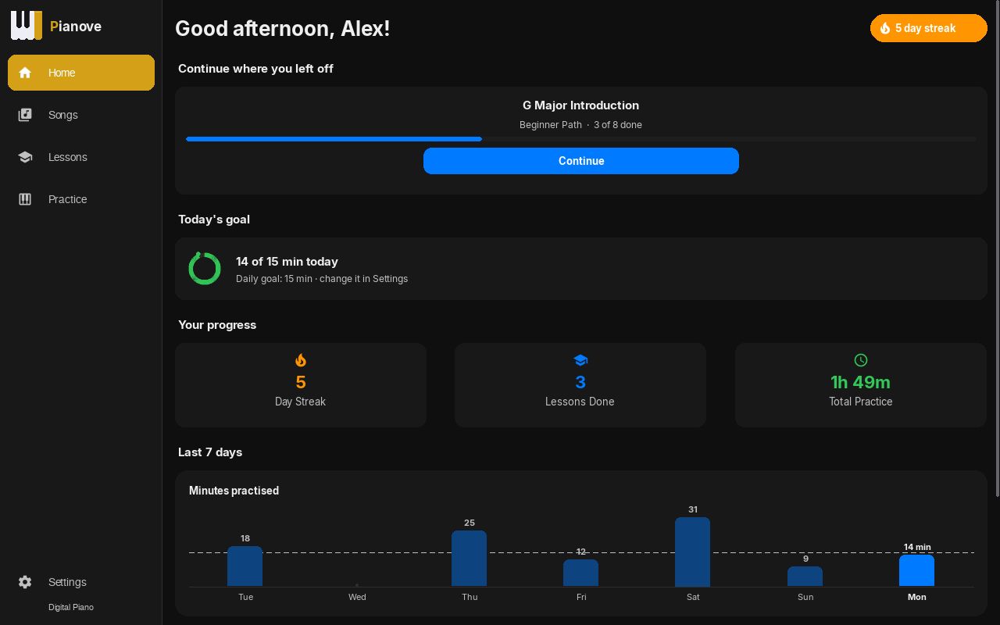
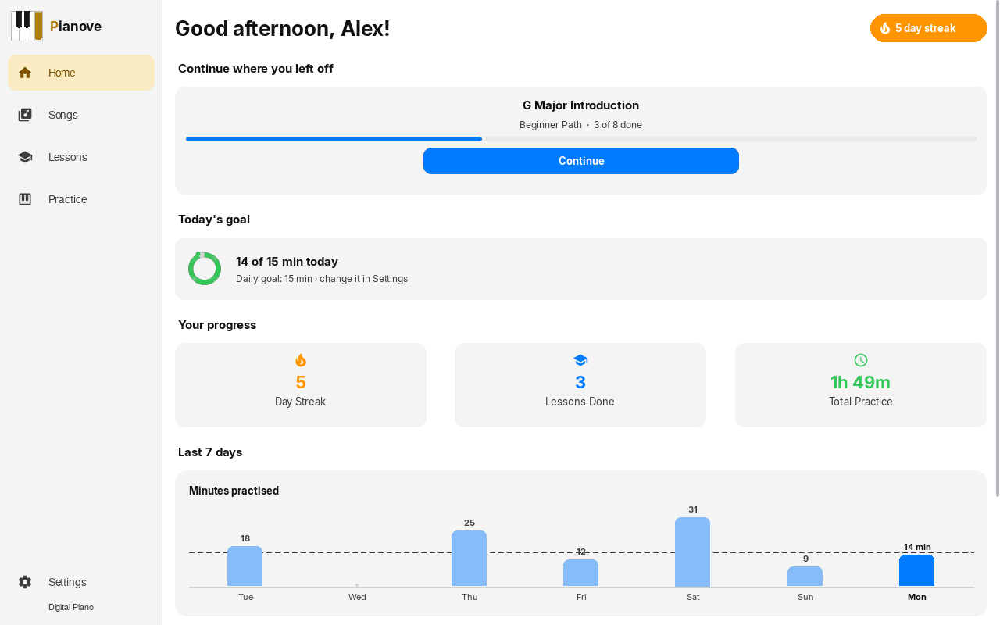

Your App
Progress & Achievements
Practice time, streaks and achievements, counted from what you actually play.
How practice is counted
Pianove measures practice from the keys you play while a lesson, a song or a sight-reading session is open. The time between two notes counts when it is under 20 seconds, so a pause to read or think counts, a screen left open while you make tea does not. Lessons, songs and sight-reading all count the same.
A day keeps your streak when you finish a lesson, a song step or a sight-reading session, or practise for at least a minute.
The Home dashboard
- Day streak (top right): days in a row you practised.
- Continue where you left off: the next lesson of your course.
- Today's goal: minutes practised today against your daily goal (10 minutes unless you change it in Settings → Profile → Daily Goal, 5 to 60). Reached, the ring turns into a tick.
- Your progress: streak, lessons done and total practice time.
- Last 7 days: minutes per day as bars, today highlighted, with the goal as a dashed line.
- Sight reading (once you've done some): sessions, accuracy and sessions this week, then the achievements.


Achievements
| Achievement | How to get it |
|---|---|
| First Lesson | Finish any lesson |
| Course Complete | Finish every lesson of the Beginner Path |
| 3-Day Streak | Practise on three days in a row |
| Dedicated | Practise on seven different days |
| Sight Reader | Finish five sight-reading sessions |
| Sharp Eye | Average 80 % accuracy over at least three sight-reading sessions |
Songs
Every song keeps its own learning-path progress: the stars of each step and where you stopped, shown on the song's page as n / m steps.
Privacy
Nothing is uploaded. Progress lives in ~/.pianove/storage.json (practice time per day under practice_log); delete the file to start from zero.